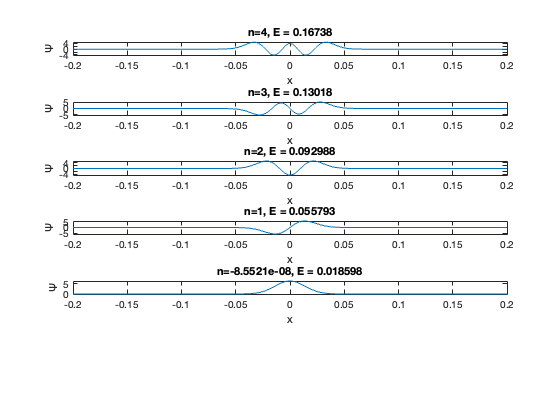

Simulation of Quantum Harmonic Oscillator Potential using MATLAB
Aarav Ratra, 21122002
Contents
Matrix Formalism
N = 10; %Number of energy levels we are restricting ourselves to for simplicity %Defining creation and anhillation operators usin matrices a = diag(sqrt(1:N-1),1); ad= diag(sqrt(1:N-1),-1); num = ad*a; %Number operator = ad*a hcr = 6.582119569E-16; %Reduced Planck's Const (in eV) vbar = 300; %cm^-1 c = 2.99792458E10; %cm/s w = 2*pi*vbar*c; m = 6.2224e-26; %Arbitary value chosen Id = diag(ones(1,N)); %Identity Matrix H = (num + Id/2)*hcr*w; %X = sqrt(hcr/(2*m*w))*(ad + a); fprintf('Given that ħω = %1.5f \n',hcr*w) %eigenvectors and eigenvalues of the Energy Operator fprintf('The energy eigenvalues are as follows:') H_eigenvalues = eig(H) fprintf('The Hamiltonian Matrix is as described:\n') disp(H)
Given that ħω = 0.03720
The energy eigenvalues are as follows:H_eigenvalues =
0.0186
0.0558
0.0930
0.1302
0.1674
0.2046
0.2418
0.2790
0.3162
0.3534
The Hamiltonian Matrix is as described:
Columns 1 through 7
0.0186 0 0 0 0 0 0
0 0.0558 0 0 0 0 0
0 0 0.0930 0 0 0 0
0 0 0 0.1302 0 0 0
0 0 0 0 0.1674 0 0
0 0 0 0 0 0.2046 0
0 0 0 0 0 0 0.2418
0 0 0 0 0 0 0
0 0 0 0 0 0 0
0 0 0 0 0 0 0
Columns 8 through 10
0 0 0
0 0 0
0 0 0
0 0 0
0 0 0
0 0 0
0 0 0
0.2790 0 0
0 0.3162 0
0 0 0.3534
On obtaining the eigenvalues of the above, we can attempt to show the energy levels and wavefunctions.
%We first solve for 0th eigenstate, then we use the creation operator to %derive the rest. %a|0> = 0 => we obtain Ψ0 through a first order differential equation. %I shall be using the Symbolic Math library of MATLAB which allows us to %deal with functions and derivatives in a more convenient manner. syms x; beta = sqrt(m*w/hcr) %Declaring ad_ and a_ as anonymous symbolic functions ad_ = @(ps) -diff(ps)/(beta*sqrt(2)) + beta*x*ps/sqrt(2); a_ = @(ps) diff(ps)/(beta*sqrt(2)) + beta*x*ps/sqrt(2); n_ = @(ps) ad_(a_(ps)); %Number Operator n_avg = @(ps) int(n_(ps)/ps,-1000,1000)/2000 ; %I have computed the average eigenvalue of the n operator. %Note: This function requires more computational resources than my local %system. This does not really return suitable value for n >=3 within %feasable time and ends up crashing matlab. Hence, i shall only demonstate %it for n = 0,1,2 psi_0 = sqrt(beta/sqrt(pi))*exp(-0.5*beta^2*x^2); %Manually calculated
beta = 73.0898
%I shall be running a loop for eigenstates we are dealing with. I would be %dealing with only the first 5 eigenstates, hence, I am reassigning N = 5 N=5; p = psi_0; for i=1:N if(i<=3) n = eval(n_avg(p)) disp('Above n evaluated using the operator') else n = i-1 end E = (n +1/2)*hcr*w; subplot(N+1,1,N+1-i) fplot (p,[-.2,.2]) xlabel('x') ylabel('Ψ') title('n='+string(n)+', E = '+string(E)) p = ad_(p)/sqrt(i); end
n =
-8.5521e-08
Above n evaluated using the operator
n =
1.0000
Above n evaluated using the operator
n =
2.0000
Above n evaluated using the operator
n =
3
n =
4
